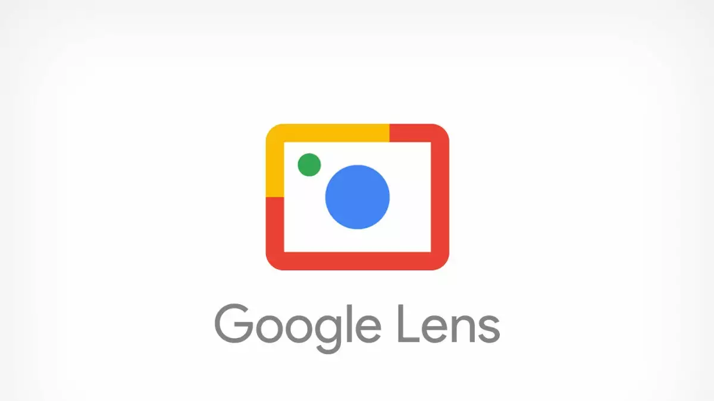
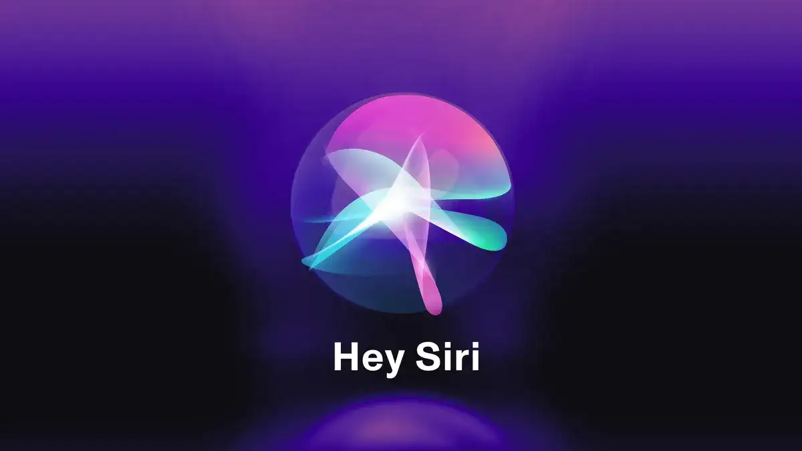

قائمة التطبيقات
| اسم التطبيق | اسم الشركة المطورة | مجال الاستخدام | مجاني | اظهار التفاصيل |
|---|---|---|---|---|
| ChatGPT | OpenAI | التعلم - التواصل | نعم | |
|
عنوان الموقع الإلكتروني: https://chatgpt.com/ |
||||
| Google Lens | التعرف على الصور | نعم | ||
|
عنوان الموقع الإلكتروني: https://lens.google  |
||||
| Grammarly | Grammarly Inc. | التعلم - الكتابة | نعم | |
|
عنوان الموقع الإلكتروني: https://www.grammarly.com  |
||||
| DeepSeek | DeepSeek AI | التحليل والبحث الذكي | نعم | |
|
عنوان الموقع الإلكتروني: https://www.deepseek.com |
||||
| Siri | Apple | المساعدة الشخصية | نعم | |
|
عنوان الموقع الإلكتروني: https://www.apple.com/siri  |
||||